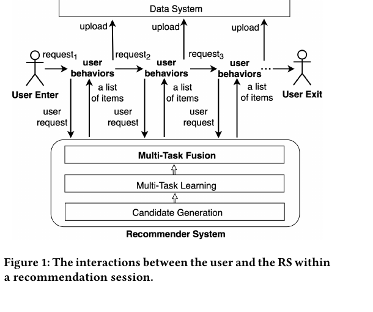
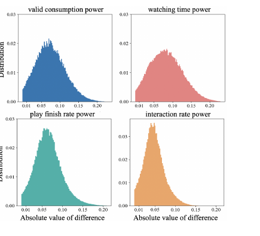
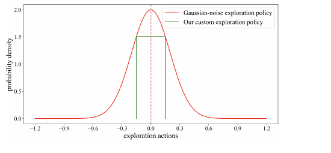
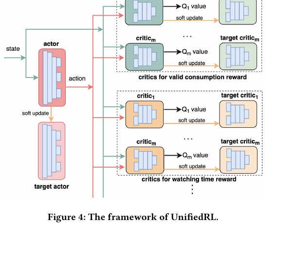
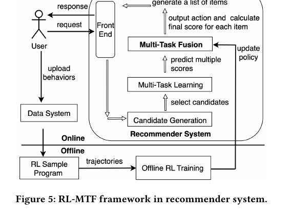
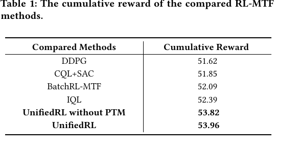
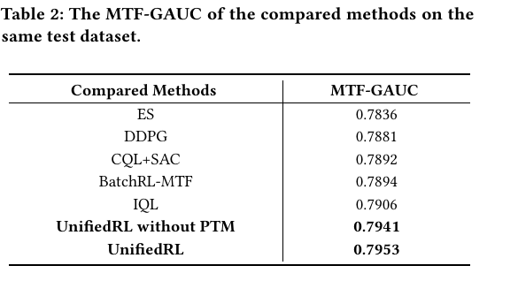
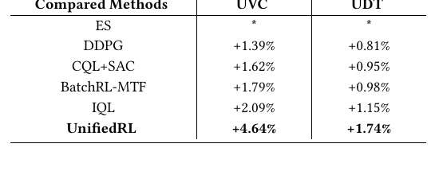

UnifiedRL
1. 基本信息
- 标题：UnifiedRL: A Reinforcement Learning Algorithm Tailored for Multi-Task Fusion in Large-Scale Recommender Systems
- 作者：Peng Liu, Cong Xu, Ming Zhao, Jiawei Zhu, Bin Wang, Yi Ren
- 机构：Tencent Inc.
- 时间：2024（会议版为 CIKM 2024；当前本地 PDF 对应 arXiv v6，更新时间是 2025-09-24）
- arXiv：https://arxiv.org/abs/2404.17589
- DOI：https://doi.org/10.1145/3511808.3557065
- 关键词：Recommender Systems、Reinforcement Learning、Multi-Task Fusion、Long-term User Satisfaction
- pdf位置：
C:\Users\chaol\Desktop\推荐论文阅读\reward sys\UnifiedRL.pdf - 笔记位置：
论文笔记/精排/LTR与多目标融合/UnifiedRL.md - 分类：精排 / LTR与多目标融合
2. 相关论文
- BatchRL-MTF：UnifiedRL 的直接前置基线，同样把 multi-task fusion 写成 session 级 RL 调权问题。区别在于 BatchRL-MTF 主要靠 BCQ 式行为约束和 mixed online exploration 缓解 OOD；UnifiedRL 则进一步把探索边界显式写进 actor / critic 目标，并用 progressive training 加快闭环。
- Pantheon：同样是在工业推荐里替代手工
ensemble sort / multi-task fusion，但路线明显不同。UnifiedRL 仍保留“多任务分数 + 融合公式”的范式，用 RL 学用户级 fusion weight，并靠定制 exploration policy 解决 offline RL 的 OOD 问题；Pantheon 则把问题改写成 ranking hidden-state 上的可学习融合器，再用IPPO搜索更好的 Pareto trade-off。 - EMER：两篇都在解决工业推荐里的“最终多目标排序怎么学”这个核心问题，但 EMER 是后续的另一条路线。UnifiedRL 更像在现有多任务预测器之上做长期回报导向的 RL 调权；EMER 则把融合排序重写成 request-wise comparative modeling，并用
IPUT + self-evolving显式处理 offline-online 不一致。 - xMTF：后续的 RL-MTF 路线，直接把 UnifiedRL 这类“固定融合公式 + RL 输出融合参数”的方法视作 formula-based 对照。UnifiedRL 主要解决 exploration policy、OOD 约束和渐进训练闭环；xMTF 则进一步质疑融合公式本身的表达上限，改成 formula-free monotonic fusion。
3. 一句话总结
UnifiedRL 的核心不是“再换一个离线 RL 算法”，而是把 offline RL 训练、在线探索策略和多轮迭代训练 绑成一个整体：它承认工业推荐里的多目标融合本质上是在 session 内持续调一组 personalized fusion weights，于是用定制的有界探索来获得可解释的行为分布边界，再在这个边界内放松 OOD 约束，最终比 DDPG / CQL+SAC / BatchRL-MTF / IQL 都跑得更好。
4. 论文在解决什么问题
4.1 为什么 Multi-Task Fusion 不是“最后随便调一下权重”

Figure 1 把这篇 paper 的问题设置画得很清楚：推荐系统先做 candidate generation，再做 multi-task learning，最后才进入 multi-task fusion；而用户并不是只看一条曝光就结束，而是在一个 session 里不断请求、消费、反馈，再影响后续请求。
这意味着 MTF 不是单次曝光的末端小模块，而是 session 级长期收益的控制点。作者想优化的不是“这一条结果点击率更高”，而是整段 session 内的累计满意度。也正因为这样，传统只看 instant reward 的 Grid Search、Bayesian Optimization、ES 都不够，他们要把问题写成 RL。
4.2 现有 RL-MTF 方法为什么仍然学不到真正最优策略
作者认为已有 offline RL 做 MTF 时有三个硬伤：
- 为了避免 OOD，它们通常把策略限制得过严，结果是安全但保守，性能上不去。
- 在线探索和离线训练是割裂的。训练时只看到静态日志，却不知道这些日志到底是被什么 exploration policy 采出来的，所以最多学到“和已有策略相容”的次优解。
- 现有探索策略效率不高，还可能把异常 action 直接打到线上，伤用户体验。
这三点合起来，决定了作者不是单纯换 critic 或 actor，而是想重写“探索数据怎么来、训练怎么用这些数据”的整套机制。
4.3 这篇 paper 如何把多目标融合写成 MDP
论文把一个 recommendation session 建模成 MDP：
state：用户画像、历史行为序列、统计特征等。action：RL 模型输出的一组 fusion weights。reward：由观看时长、有效消费、点赞、分享等行为加权得到。transition：当前推荐列表触发的用户反馈会进入下一时刻状态。
最关键的是 action 的语义。UnifiedRL 并不直接“选 item”，它输出的是一组用户级融合参数，再和 ranking 模型给出的多任务预测分数一起算最终分：
这里的 pred_score_i 是已有 MTL 模型对第 i 个目标的预测值，power_i 和 bias_i 是 RL 输出 action 向量里的分量。也就是说，同一次请求里每个 candidate 的多任务预测是 item 级的，但 fusion weight 是 user/request 级的。实验里 action 是 10 维，意味着实际场景里他们在控制 5 个目标对应的 power + bias 两套参数。
5. 方法是怎么设计的
5.1 Reward Function：先把“即时满意”和“长期满意”分开写清楚
作者先定义整个推荐列表的即时奖励：
其中 l 是这一轮推荐列表里的 item 数，k 是行为类型数， 表示第 j 个 item 上第 i 类行为是否发生或发生多少，w_i 是行为权重。然后再用折扣因子把 session 内未来回报加进来：
这里的关键不是公式本身，而是奖励计算单位。即时奖励不是“某个 item 的标签”，而是整个 list 在当前时刻带来的综合收益；累计奖励则是从当前时刻一直滚到 session 结束。这正好对应作者的主张：MTF 应该服务于 session 级长期满意，而不是单次排序的局部最优。
5.2 Figure 2：新策略和旧策略通常离得不远

Figure 2 统计的是“新学到的 RL policy”和“上一版 RL policy”在同一 state 上输出 action 的绝对差值分布。四个子图分别看 valid consumption、watch time、play finish rate、interaction rate 对应的关键 action 维度。
作者的观察很朴素但很重要：分布主要集中在较小差值区域，说明新旧策略通常不会相差特别大。换句话说，工业推荐里的策略迭代往往是在已有好策略附近微调，而不是每轮都跳到完全不同的 action 空间。这个结论直接支撑了后面的探索设计和 OOD 处理。
5.3 Figure 3：因此 exploration 应该围绕 baseline policy 做有界扰动

基于 Figure 2，作者提出在线探索时不要再用大范围 Gaussian noise，而是围绕 baseline policy 做有界均匀扰动：
对照基线做法则是：
Figure 3 把这件事画得很直观：红色 Gaussian 噪声的大量概率质量落在对业务价值不高的区域，而 UnifiedRL 只在一个窄盒子里探索。论文在自己的场景里取 b_u=0.15、b_l=-0.15，并指出在 10 维 action 空间、相同 exploration density 的要求下，这种做法的效率大约能比 Gaussian-noise 高 倍。
这里的隐藏条件是：你必须先有一个还不错的 baseline policy，并且能证明“新策略通常不会离它太远”。如果这两个前提不成立，这种有界探索就可能把真正的高价值动作挡在外面。
5.4 Figure 4：UnifiedRL 的核心是把 actor/critic 和探索边界绑在一起

Figure 4 是全文最关键的图。它说明 UnifiedRL 不是“离线训练一个 actor-critic，再另外配个探索策略”，而是把二者揉成统一框架：
- 左边是 actor / target actor。
- 右边是按关键 reward 分组的多套 critics / target critics。
- 上下两组 critics 分别估计不同类型的累计回报。论文在自己的场景里取
q=2，一组看 watch time，另一组看其它行为；每组有m=24个独立 critic。
5.4.1 Actor：不再用硬约束，而是只在越界时加罚
作者把 actor 的目标写成“最大化多组 critic 的加权价值，同时加两个惩罚项”：
其中 。这个式子最值得记的不是符号，而是三个作用：
- 第一项让 actor 去追求更高的加权累计回报。
- 第二项 是边界惩罚。如果 action 落在用户个性化探索区间内，惩罚就是 0；越过上界或下界后，再按指数形式加罚。
- 第三项是多 critic 标准差，等于把“critic 之间意见越不一致，这个 action 越不可信”显式写进优化目标里。
这一步解释了作者所谓的“放松 overly strict constraints”到底是什么意思。它不是完全不管 OOD，而是说：既然训练日志就是按这个 bounded exploration policy 采出来的，我就不需要像 BCQ/CQL 那样对所有偏离行为策略的动作都严防死守，只要在已知边界内充分利用模型容量即可。
5.4.2 Critic：TD target 也会根据是否越界被软惩罚
critic 端同样没有用硬裁剪，而是把 target Q 乘上一个与越界程度相关的衰减项：
其中 在 action 落入个性化边界时等于 1，越界时按逆指数形式衰减。直觉上可以把它理解成：
- 在“探索策略真正采过”的区域里，critic 正常做 bootstrap。
- 一旦 target actor 想去边界外，未来回报估计就会被压小，逼模型不要把过于陌生的动作想得太美。
这就是 UnifiedRL 对 OOD 的核心处理：不是传统 offline RL 的硬行为克隆式约束，而是“知道 exploration box 长什么样之后，再对 box 外动作做软抑制”。
5.4.3 Progressive Training Mode：把一次大闭环拆成多次小闭环
作者还用高效 exploration policy 支撑了 progressive training mode。传统做法是先收一大批探索数据，再离线训练一次；UnifiedRL 则把它改成多轮“在线探索 + 离线训练”交替进行。论文实验里 dataset 3 就是把原本单轮流程拆成 5 轮。
这一步的逻辑是：如果探索成本足够低、对用户影响也可控，就没必要等很久再更新模型，而是可以更频繁地把最新策略送回线上继续收数。作者认为这会让目标策略更快逼近真实环境下的最优策略。
5.5 Figure 5：它在真实推荐系统里是怎样闭环的

Figure 5 给的是工程落地图。在线部分负责在收到用户请求后生成 personalized action，再和 candidate generation、MTL 一起算最终分数并排序；离线部分负责从日志里抽 trajectory、训练 RL-MTF 模型，再把新 policy 回推给线上。
这张图的重要性在于，它明确了 UnifiedRL 的位置不是替换整条推荐链，而是插在已有的 recommender stack 上方，只接管“多任务分数如何被融合”这一步。因此它的落地门槛虽然高，但对现有系统侵入性相对可控。
5.6 从收数到训练：UnifiedRL 的完整闭环
如果只看 Figure 3，很容易误以为 UnifiedRL 只是把 Gaussian noise 换成 uniform noise。更准确地说，它做的是一整套“有边界收数 + 知道边界地训练 + 多轮迭代”的闭环。
第一步是先有一个线上 baseline policy 。这个 baseline 可以理解成当前已经可用的 RL-MTF 策略，或者上一轮训练得到并已经上线的策略。用户请求到来时，系统先构造当前 state ，包括用户画像、近期行为、统计特征等；然后 baseline policy 输出一组融合参数 。
第二步是在线探索时不直接使用这个 action，而是在它周围做有界均匀扰动：
这个 才是真正打到线上的探索 action。它会和上游 MTL 给出的多任务预测分数一起进入融合公式，生成每个 candidate 的最终排序分数，系统据此返回推荐列表。用户之后产生观看、有效消费、点赞、分享等反馈，这些反馈会被汇总成当前 list 的即时 reward ，同时用户行为也会进入下一时刻状态 。
第三步是把线上日志整理成 trajectory。离线训练用的不是孤立样本，而是 session 内连续的 transition：
一整个 session 会形成多步序列，所以 critic 学的是从当前 action 开始的折扣累计回报，而不是只看当前请求的即时收益。这里的关键是：每条 transition 不只记录了 state、action 和 reward，还隐含知道这个 action 是从哪个 baseline policy 加什么边界扰动采出来的。因此训练时可以恢复“这个 state 下可信的探索盒子”：
第四步是离线训练 actor 和 critics。UnifiedRL 不像 BatchRL-MTF 那样主要依赖 BCQ 的 action generative network 去贴近历史行为分布，而是直接利用上一步已知的探索边界：
- actor 如果输出落在探索边界内，边界惩罚 为 0，可以充分追求更高 critic value；
- actor 如果输出越过边界，才按越界程度加惩罚；
- critic 做 TD target 时，如果 target actor 的下一步 action 仍在边界内，就正常 bootstrap；
- 如果 target action 越界，则用 衰减未来 Q 值，避免模型把边界外陌生 action 估得过高；
- 多个 critics 的方差还会作为不确定性惩罚，critic 之间越不一致，actor 越不应该贸然相信这个 action。
所以 UnifiedRL 的核心不是“更大胆探索”，而是把可信区域定义得更清楚：边界内是这次 exploration policy 真正覆盖过的区域，可以比 BCQ/CQL 更少保守；边界外仍然被压制，不能随便 extrapolate。
第五步是把训练好的新 actor 回推到线上，成为下一轮 baseline 或 candidate policy。普通做法可能是收 5 天探索数据后离线训练一次；UnifiedRL 因为有界探索对用户体验影响更小，就可以把同样的数据收集过程拆成多轮。论文里的 Dataset 3 就是用 bounded exploration 加 progressive training，把原本一轮“收数 → 训练”拆成 5 轮“上线探索 → 离线训练 → 更新策略 → 再上线探索”。
和 BatchRL-MTF 对比，差异可以这样记：
- BatchRL-MTF 也会线上探索、离线训练，但离线阶段主要靠 BCQ 风格的生成器限制 action 不要偏离历史日志分布太远；
- UnifiedRL 先把线上探索设计成有明确上下界的采样过程，再把这个上下界写进 actor loss 和 critic target；
- 因此 UnifiedRL 优化的不是单点模块，而是“探索数据怎么采、采来的数据在训练时如何被信任、策略如何多轮回灌”的整个 RL-MTF 闭环。
6. 实验与结果
6.1 数据、对比方法和评估方式
论文没有公开数据集，直接在一个服务数亿用户的工业推荐系统上收数。数据设置比较重要：
- 3 组随机用户，每组约 200 万人。
- 每种 exploration policy 都跑 5 天。
- 每个数据集约有 680 万个 sessions。
Dataset 1用 Gaussian-noise exploration。Dataset 2用 UnifiedRL 的 bounded exploration。Dataset 3用 bounded exploration + 5 轮 progressive training。
对比方法包括 ES、DDPG、CQL+SAC、BatchRL-MTF、IQL，再加两个 UnifiedRL 版本。
离线评估除了 NCIS，还额外定义了一个更贴近 MTF 的 MTF-GAUC：
它的构造方式是：
- 先按用户分组。
label用 valid consumption。sample weight用 Eq.2 算出的即时 reward。prediction用 Eq.1 得到的最终融合分数的归一化值。
作者自己也承认这个指标“不算严格”，但它有一个很实际的好处：不同类型的 MTF 方法都能用同一把尺子比较，而不会像 NCIS 那样依赖各自 critic 的质量。
6.2 Table 1：离线 cumulative reward 说明 UnifiedRL 的核心收益来自“知道探索边界”

Table 1 的结论很直接：
DDPG / CQL+SAC / BatchRL-MTF / IQL的 cumulative reward 依次是51.62 / 51.85 / 52.09 / 52.39UnifiedRL without PTM直接到53.82UnifiedRL再到53.96
最值得记的是 UnifiedRL without PTM 已经显著高于 IQL。也就是说，作者最主要的增益并不是先来自 progressive training，而是先来自“把探索策略和 offline RL 训练绑在一起”，让模型知道哪些动作其实仍在可信范围内，从而放松过于保守的 OOD 约束。
6.3 Table 2：MTF-GAUC 也给出同样的排序

Table 2 的相对顺序和 Table 1 一致：
ES：0.7836IQL：0.7906UnifiedRL without PTM：0.7941UnifiedRL：0.7953
这张表的意义不是绝对值，而是说明作者新造的辅助离线指标至少和 NCIS 的结论同向。对于这种没有公开 benchmark、又高度依赖内部系统的工业论文来说，这种“两个离线指标都支持同一结论”很重要。
6.4 Table 3：线上收益才是这篇 paper 真正站住脚的地方

线上 A/B 的结果最关键：
DDPG：UVC +1.39%，UDT +0.81%IQL：UVC +2.09%，UDT +1.15%UnifiedRL：UVC +4.64%，UDT +1.74%
也就是说，UnifiedRL 不只是“离线 reward 更高”，而是在线上把最重要的两个指标都明显拉开了，且论文声明所有提升都满足 p < 0.05。如果只记一个结果，这篇 paper 就记 Table 3：在工业推荐的 multi-task fusion 环节，把 exploration policy 与 offline RL 统一建模，线上增益比已有 RL-MTF 方法高出一个明显档位。
7. 理解、启发与局限
7.1 这篇论文最值钱的地方
我觉得 UnifiedRL 最值得记的不是某个 actor-critic 细节，而是它把 RL-MTF 的关键矛盾点说透了：
- 你不能一边依赖探索数据，一边又完全不知道探索策略长什么样。
- 你不能为了避开 OOD，把可行 action 空间压得过窄。
- 你也不能为了探索更猛，把线上用户体验当试验场。
UnifiedRL 的贡献，就是给出了一个工业上可操作的折中办法：先用 bounded exploration 把可探索空间收敛成一个高价值盒子，再把这个盒子直接写进 actor 和 critic 的训练目标里。
7.2 这套方法成立的前提
- 必须有可用的 baseline policy，且新旧策略通常只在局部微调。
- 必须能为每个用户或状态拿到探索分布上下界，否则“软约束”就无从定义。
- 推荐链路必须允许频繁回灌新策略，否则 progressive training 的收益会被拖慢。
- reward 权重
w_i仍然需要人工或统计分析先设好，所以它不是完全摆脱业务经验。
7.3 论文没有充分展开的地方
- actor 和 critic 的具体网络结构几乎没展开，只说“类似 PLE”或“也可以换成别的结构”。
b_u / b_l的选择依赖统计分析，但正文没有给出更系统的选取准则。MTF-GAUC很工程化、很实用，但也确实不够严格，更多是内部验证指标。- 这条路线对工程基础设施要求很高，所以更像腾讯内部成熟推荐系统上的强化学习升级，而不是通用到处可复现的方法。
8. 结论与记忆点
UnifiedRL 可以记成一句话：
在工业推荐的 multi-task fusion 环节，真正重要的不是“选哪种 offline RL 算法”，而是“让离线训练明确知道在线探索到底怎么做”，这样才能在不牺牲用户体验的前提下放松 OOD 约束、学到更好的 personalized fusion policy。
以后如果再看 RL-MTF 论文，我会先用这篇文章问三个问题：
- 它的 exploration policy 是什么，训练时知不知道这个 policy 的边界？
- 它怎样处理 OOD，是硬限制、软惩罚，还是根本没说清？
- 它有没有把“收数-训练-再收数”做成更快的闭环，而不只是一次性离线训练？